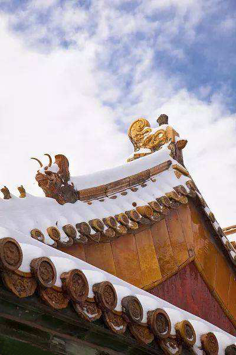
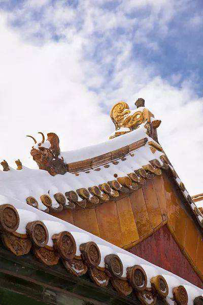

The Palace Museum
Established in 1925, the Palace Museum was installed in the imperial palace of two consecutive dynasties - the Ming (1368-1644) and the Qing (1644-1911). It is one of the most prestigious museums in China and the world at large.
About
Palace
The Palace Museum is housed in the Forbidden City, the Chinese imperial palace from the Ming Dynasty to the end of the Qing Dynasty. It is located in the middle of Beijing, China. For almost five centuries, it served as the home of the Emperor and his household, and the ceremonial and political centre of Chinese government.
Museum
The Museum conducted a new audit as well as a thorough search of the Forbidden City, uncovering a number of important items. In addition, the government moved items from other museums around the country to replenish the Palace Museum's collection. It also purchased and received donations from the public. The collections of the Palace Museum are based on the Qing imperial collection. According to the results of a 1925 audit, some 1.17 million pieces of art were stored in the Forbidden City.
 

Academics
Research
The Palace Museum operates several academic organizations. The major two are the Palace Academy and the Palace Research Institute. It also hosts the Forbidden City Society, the Society of the Qing Palatial History, and the National Laboratory of Ancient Ceramics for Research and Preservation. The Palace Research Institute is headed by Zheng Xinmiao. It is the publisher of the Palace Museum Journal, Journal of Gugong Studies. It has numerous research labs.
Conservation
The Hospital for Conservation is the conservation branch of the Museum responsible for the maintenance and conservation of the artifacts. It has several laboratories and studios responsible for the research and restoration of artifacts of different types. The laboratories are: Historical Architecture Conservation Lab, Basic Analysis Lab, and Computed Tomography Lab.